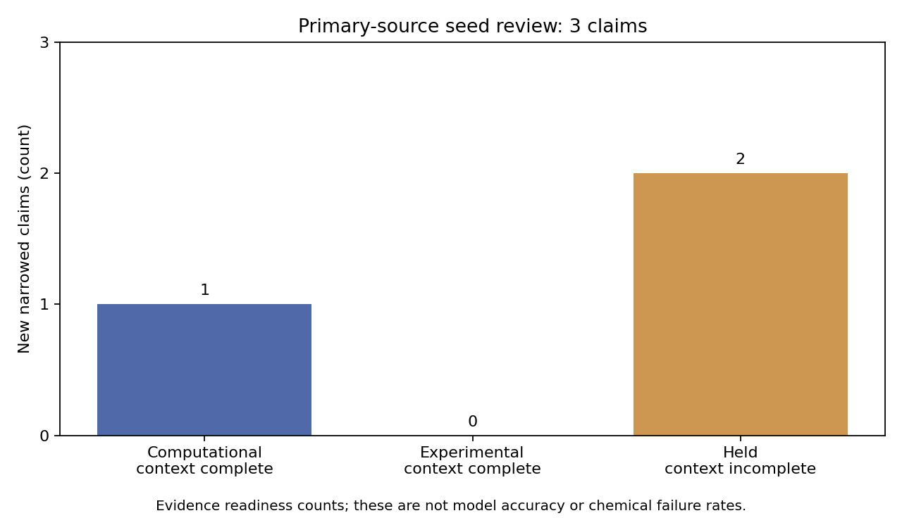

Research hold remains. These are evidence-readiness counts, not model accuracy.
| New scoped claims reviewed | Computational eligible | Experimental eligible | Held |
|---|---|---|---|
| 3 | 1 | 0 | 2 |
All 23 historical assertions remain withheld. Final full suite: 105 passing tests.
